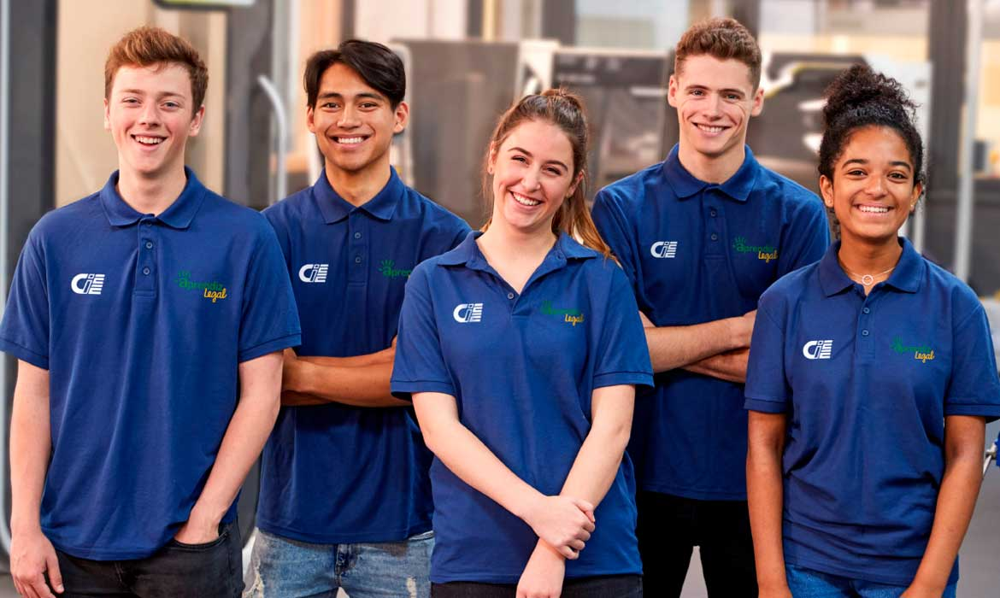
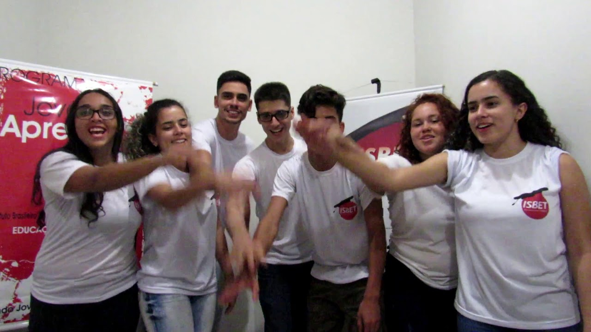
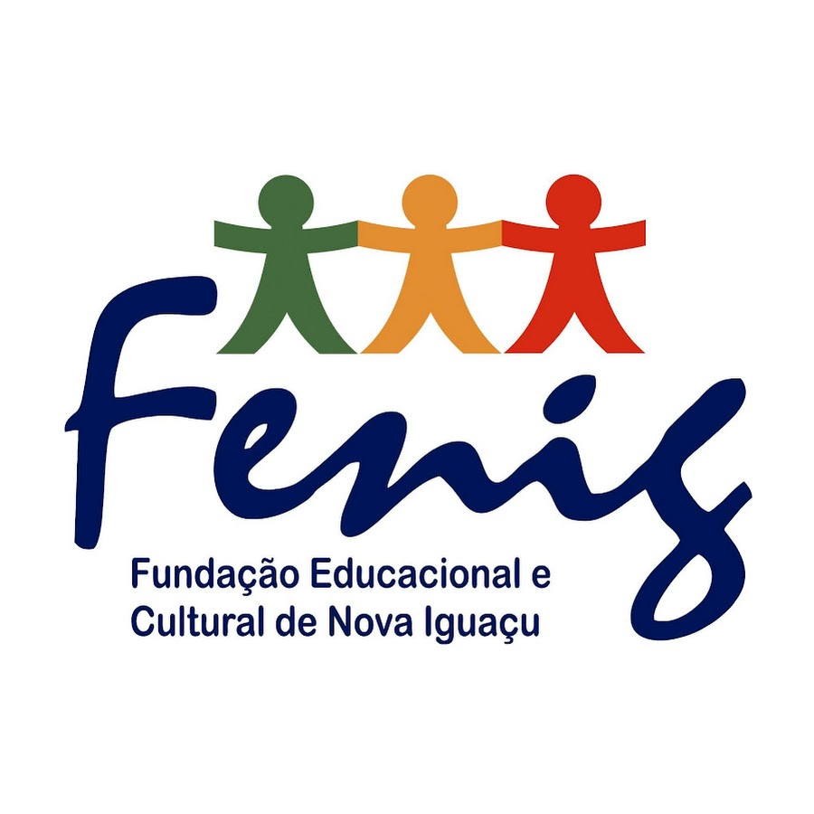
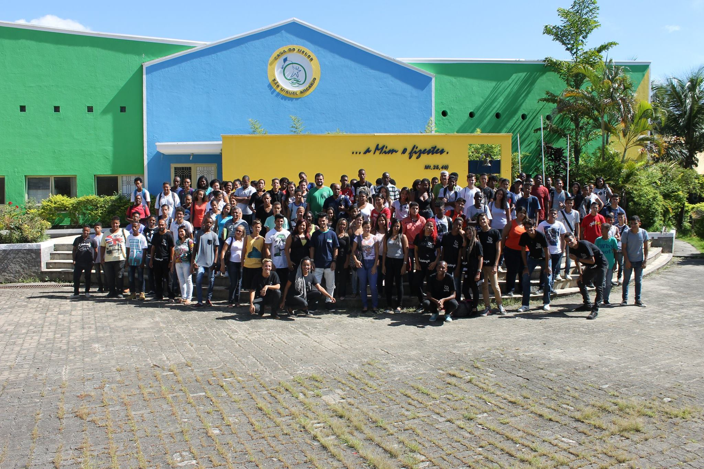
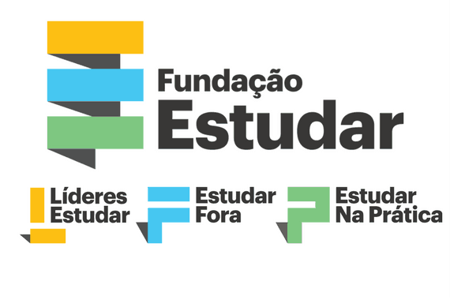
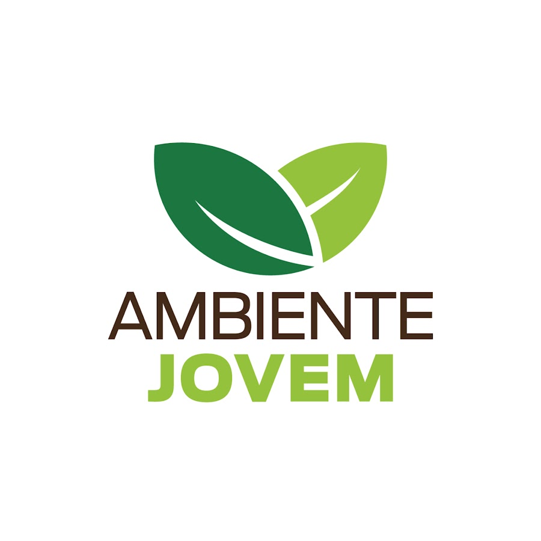
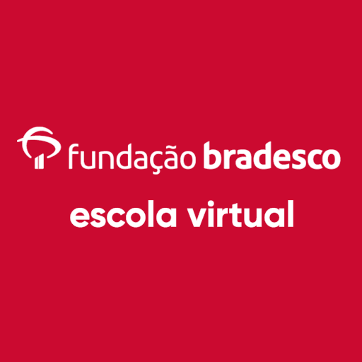

Centro de Integração Empresa-Escola(CIEE): O CIEE procura sempre estar conectado com o futuro, são referência
nacional
em assistência social e reconhecidos como uma instituição pioneira e protagonista no processo de seleção,
contratação,
inclusão, gestão e desenvolvimento de jovens através dos programas de aprendizagem e estágio.
Em Nova Iguaçu existe uma sede do CIEE, lá você pode se cadastrar para buscar por uma vaga em: cursos,
programa Jovem
aprendiz, estágios e muito mais.

Banco de Oportunidades-Senac (exclusivo para alunos e ex-alunos do Senac): O Banco de Oportunidades tem a
missão de
fomentar estratégias de mão de obra qualificada do Senac para o mercado de trabalho, conectando talentos e
empresas.
ISBET-Programa de Estágio e Jovem Aprendiz:O ISBET quer gerar prosperidade promovendo o bem-estar social,
tendo em vista consolidar-se como uma entidade do
terceiro setor, voltada à promoção humana, com ações efetivas na área educacional, seguindo valores como:
ética,
responsabilidade, promoção humana, credibilidade e qualidade.

CVTI - Centro Vocacional de Tecnologia e Inovação: Você já ouviu falar do CVTI? Talvez você esteja
perdendo uma grande oportunidade, hein, iguaçufilho! Mamãeguaçu explica, a
Prefeitura de Nova Iguaçu oferece oito cursos gratuitos no Centro Vocacional de Tecnologia e Inovação
(CVTI). É a sua
oportunidade de obter conhecimento em uma área que só cresce no Brasil e no mundo.
Os cursos oferecidos pelo CVTI são: Informática Básica, Excel Avançado, Montagem e Manutenção de
Microcomputadores,
Criação de Aplicativos, Criação de Games, Programação, Robótica e Web Design. O calendário prevê 40
horas de aulas em 75
dias. Os alunos serão divididos em diferentes turmas e cada uma será composta por até 30 estudantes.
As inscrições devem ser feitas pela internet.
Cadastramento de Artesão - FENIG: A Fundação Educacional e Cultura de Nova Iguaçu (FENIG) realiza o
cadastramento de novos artesãos no Programa Municipal
de Artesanato da Prefeitura de Nova Iguaçu. Os interessados podem fazer sua inscrição de forma virtual
no link e
preencher um formulário, ou presencial, na sede da FENIG na Rua Governador Portela, 812, segundo
andar. Centro de Nova
Iguaçu.
Funcionamento: Segunda à sexta, de 9h às 17h.
Atualmente, a FENIG conta com cerca de 1.780 artesãos cadastrados, sendo 95% mulheres. O
credenciamento é fundamental,
pois permite a participação do artesão em feiras e exposições dentro e fora do estado do Rio de
Janeiro e concede
descontos especiais na compra de material para a confecção de produtos artesanais em lojas
conveniadas. Além disso, os
cadastrados participam constantemente de oficinas oferecidas pela FENIG.

Casa Do Menor São Miguel Aracanjo: A Casa do Menor São Miguel Aracanjo é uma fundação que promove
cursos profissionalizantes e oficinas gratuitas para todas as idades.

Fundação estudar: Líderes Estudar - é um programa que seleciona, apoia, reúne e desenvolve jovens
de alto potencial, com
o oferecimento de
bolsas de estudos e estímulos de uma comunidade que atua para transformar o mundo para melhor.
Estudar Fora - é uma
iniciativa que aproxima talentos do seu sonho de estudar em uma das melhores universidades do
mundo,
a partir de conteúdo digital e um preparatório especializado. Estudar Na Prática - é uma
iniciativa que guia o
desenvolvimento pessoal e profissional de jovens inquietos, a partir de
cursos, conteúdo digital e conferências de conexão com o mercado.

Ambiente Jovem
Na fundação Ambiente Jovem, jovens entre 16 e 24 anos, estudantes de escolas públicas estaduais,
são capacitados por meio de aulas e oficinas para se tornarem
agentes de transformação em seus territórios, além de receberem uma bolsa-auxílio no valor de R$
300,00.

Fundação Bradesco-Escola virtual: A Fundação Bradesco é uma instituição benemerente, privada e
sem fins lucrativos brasileira. Atualmente, possui 40
escolas próprias espalhadas em todo território nacional. Com objetivo de favorecer famílias de
baixa renda, todos os
anos novos processos de seleção são realizados para captação de novos alunos oferecendo
educação gratuita.

Classificados do Edmilson - Blog do Edmilson Àvila no g1:
O Blog do jornalista Edmilson Ávila publica semanalmente diversas oportunidades de vagas em
cursos, empregos, estágios,
programa jovem aprendiz e muito mais.